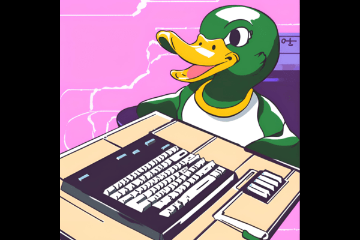

Pair Programming Duck
An essential tool in any developers toolkit which helps programmers analyze their code. It is mainly used to help find gaps in understanding or to think about their approach to a problem in a new light.

An essential tool in any developers toolkit which helps programmers analyze their code. It is mainly used to help find gaps in understanding or to think about their approach to a problem in a new light.